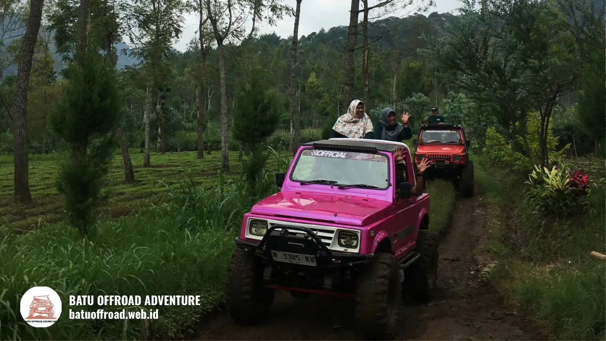

Wisata Offroad Batu Aktivitas Seru Jelajah Alam Malang Raya
Wisata offroad Batu adalah aktivitas menjelajah jalur tanah dan tanjakan di kawasan pegunungan Kota Batu dengan jeep berpemandu, sambil menikmati pemandangan alam sekitar Coban Talun. Aktivitas ini bersifat rekreasi, bukan balapan, dan cocok untuk banyak kalangan dengan persiapan yang tepat.
- Wisata offroad Batu adalah petualangan jeep berpemandu di jalur tanah kawasan pegunungan Kota Batu.
- Tujuannya rekreasi dan menikmati alam, dengan kecepatan terkendali dan pemandu berpengalaman.
- Peserta yang cocok mencakup keluarga, pasangan, komunitas, dan rombongan kantor, dengan pertimbangan khusus bagi kondisi kesehatan tertentu.
- Pemandangan perbukitan, kebun, dan udara pegunungan menjadi daya tarik utama.
- Etika wisata alam, seperti membawa pulang sampah dan mengikuti jalur, wajib dipatuhi.
Apa Itu Wisata Offroad di Batu?
Wisata offroad di Batu adalah kegiatan rekreasi menaiki jeep melewati jalur tanah, batu, dan tanjakan di kawasan pegunungan Kota Batu, Jawa Timur, dengan pendampingan pemandu lokal.
Kota Batu termasuk wilayah Malang Raya, bersama Kota Malang dan Kabupaten Malang. Kota ini berada di dataran tinggi yang dikelilingi pegunungan, sehingga udara sejuk dan lanskapnya beragam. Kawasan sekitar Coban Talun sering menjadi lokasi wisata jeep karena medannya berkontur dan pemandangannya terbuka.
Kata "wisata" menegaskan bahwa tujuannya bukan kompetisi. Pengemudi mengendalikan kecepatan, memilih lintasan aman, dan berhenti di titik tertentu agar peserta dapat menikmati suasana. Peserta cukup duduk, berpegangan, dan mengikuti arahan.
Kota Batu adalah destinasi yang sangat ramai. Pemkot Batu mencatat 778.235 wisatawan selama libur Lebaran 2025, naik dari 564.622 pada periode yang sama tahun 2024 (ANTARA, April 2025). Untuk keseluruhan 2024, paparan kinerja Pemkot Batu menyebut kunjungan wisata sebesar 10.737.865 wisatawan domestik dan mancanegara.
Angka ini menunjukkan bahwa wisata alam dan petualangan di Batu diminati, sehingga perencanaan dan etika berwisata menjadi semakin penting.
Apa manfaat wisata offroad bagi pengunjung?
Manfaat wisata offroad bagi pengunjung adalah pengalaman petualangan ringan, akses ke pemandangan yang sulit dijangkau kendaraan biasa, dan waktu berkualitas bersama keluarga atau teman.
Jeep dapat melewati jalur yang tidak cocok untuk mobil biasa. Dengan begitu, wisatawan dapat melihat sudut pandang alam yang berbeda tanpa harus berjalan jauh. Aktivitas ini juga memberi pengalaman bersama yang mudah diingat.
Wisata offroad tetap memiliki batasan. Guncangan, debu, dan cuaca dapat memengaruhi kenyamanan. Peserta perlu menyiapkan pakaian yang tepat dan mengikuti aturan keselamatan.
Siapa yang Cocok Mengikuti Wisata Offroad Batu?
Wisata offroad Batu cocok untuk wisatawan sehat yang menyukai petualangan ringan, seperti keluarga, pasangan, teman sebaya, komunitas, dan rombongan kantor.
Tidak diperlukan keahlian khusus karena pengemudi berpengalaman yang mengendalikan jeep. Peserta cukup bersedia mengikuti arahan dan menikmati perjalanan di jalur yang tidak rata.
Kelompok yang umumnya cocok:
- Keluarga. Dengan paket jalur ringan dan pengawasan orang tua.
- Pasangan. Untuk perjalanan santai dengan pemandangan.
- Komunitas dan teman. Untuk pengalaman seru bersama.
- Rombongan kantor. Sebagai kegiatan kebersamaan yang mudah diatur.
Peserta dengan kondisi tertentu, seperti masalah punggung, leher, kehamilan, atau riwayat penyakit jantung, sebaiknya berkonsultasi dengan dokter sebelum ikut. Informasi ini bersifat umum dan bukan saran medis. Batas usia anak berbeda antaroperator, sehingga perlu ditanyakan sebelum memesan.

Jeep offroad merah muda menyusuri jalur tanah.
Pemandangan Apa yang Bisa Dinikmati Saat Offroad di Batu?
Pemandangan yang dapat dinikmati saat offroad di Batu umumnya berupa perbukitan, kebun, area berhutan, dan panorama pegunungan sekitar Coban Talun.
Rute jeep melewati lanskap yang berubah-ubah. Pada titik tertentu, pandangan terbuka ke arah lembah atau perbukitan. Pada bagian lain, jalur melewati kebun atau area yang lebih rindang. Titik singgah sering dipilih karena pemandangannya.
Pengalaman visual dipengaruhi cuaca dan waktu. Pagi hari biasanya lebih cerah dan sejuk, sedangkan mendung dapat membuat suasana lebih dramatis. Karena kondisi berubah, tidak ada jaminan pemandangan tertentu pada hari tertentu.
Bagaimana Etika Wisata Alam Saat Offroad?
Etika wisata alam saat offroad adalah menjaga kebersihan, menghormati warga dan satwa, mengikuti jalur yang ditentukan, dan mematuhi arahan pemandu agar alam tetap lestari.
Etika berlaku bagi semua peserta. Beberapa prinsip dasar:
- Bawa pulang sampah, termasuk bungkus makanan dan botol.
- Tetap berada di jalur yang ditentukan.
- Jangan memetik tanaman atau mengganggu satwa.
- Jaga suara agar tidak mengganggu warga sekitar.
- Patuhi arahan pemandu dan aturan kawasan.
Etika ini penting karena jumlah kunjungan ke Kota Batu sangat besar. Dengan lebih banyak pengunjung, dampak kecil seperti sampah dan kebisingan dapat menumpuk. Setiap peserta ikut menentukan kondisi alam bagi pengunjung berikutnya.
Bagaimana Cara Memulai Wisata Offroad di Batu?
Cara memulai wisata offroad di Batu adalah memilih operator terpercaya, menentukan paket dan tanggal, menyiapkan pakaian yang sesuai, lalu mengonfirmasi jadwal sebelum berangkat.
Langkah praktis:
- Tentukan tanggal, jumlah peserta, dan anggaran.
- Pilih operator yang identitas usahanya jelas.
- Tanyakan isi paket, durasi, kapasitas jeep, dan biaya tambahan.
- Minta konfirmasi tertulis.
- Siapkan pakaian tertutup, sepatu bertali, jaket tipis, dan pelindung ponsel.
- Datang tepat waktu untuk briefing keselamatan.
Booking jauh hari disarankan untuk akhir pekan dan libur panjang. Harga dan durasi berbeda-beda, jadi konfirmasikan langsung ke operator.
Apa Perbedaan Wisata Offroad dengan Wisata Alam Lain?
Wisata offroad berbeda dari wisata alam lain karena menggunakan kendaraan khusus untuk menjelajah medan tidak rata, bukan berjalan kaki atau berkendara di jalan aspal.
Dibandingkan trekking, offroad lebih hemat tenaga dan menjangkau area lebih jauh dalam waktu singkat. Dibandingkan wisata mobil biasa, offroad menawarkan sensasi guncangan dan akses ke jalur tanah.
Namun, offroad lebih bergantung pada kendaraan dan cuaca, serta menghasilkan debu atau suara kendaraan yang perlu dikelola dengan etika. Setiap jenis wisata punya kelebihan. Pilih sesuai kebugaran, minat, dan waktu yang tersedia.
Kesimpulan
Wisata offroad Batu adalah cara seru menikmati alam Malang Raya dengan jeep berpemandu. Persiapan yang baik, pemilihan operator yang tepat, dan etika wisata alam membuat pengalaman lebih aman, nyaman, dan bertanggung jawab.
FAQ
- Apa itu wisata offroad Batu?
Wisata offroad Batu adalah petualangan jeep berpemandu di jalur tanah dan tanjakan kawasan pegunungan Kota Batu, termasuk sekitar Coban Talun, dengan tujuan rekreasi dan menikmati alam. - Apakah wisata offroad Batu aman untuk anak-anak?
Keamanan untuk anak bergantung pada kebijakan operator, kondisi jalur, dan pengawasan orang tua. Tanyakan batas usia serta ketersediaan pegangan atau sabuk pengaman sebelum memesan. - Pemandangan apa yang bisa dilihat saat offroad di
Batu?
Pengunjung umumnya melihat perbukitan, kebun, area berhutan, dan panorama pegunungan. Pemandangan bergantung pada rute, waktu, dan cuaca pada hari keberangkatan.